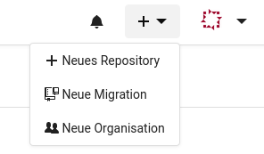
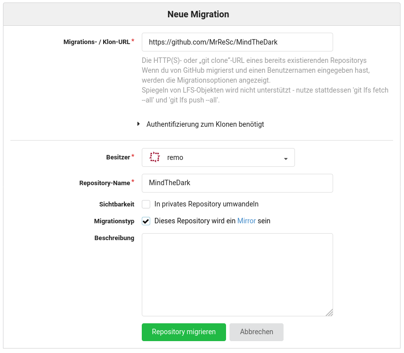
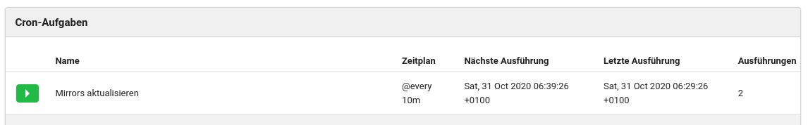

Wie man am Beispiel von youtube-dl gesehen hat, kann es sehr schnell gehen und der eigene Zugang zu einem Dienstanbieter wird gesperrt. Ich habe dies als Anlass genommen um von meinem GitHub Repositories ein Backup anzulegen.
Zuerst wollte ich mit GitHub Actions und Git Sync bei jedem neuen push das ganze Repository zu einem anderen Hoster synchronisieren. Das hat grundsätzlich auch funktioniert. Allerdings sollte man dann aus Sicherheitsgründen für jedes neue Repository ein neues Schlüsselpaar erstellen und man muss die Actions einrichten. Diese Lösung hat zusätzlich den grossen Nachteil, dass GitHub theoretisch auch Kontrolle über das gespiegelte Repository hat, da der Private-Key bei GitHub liegt. Somit wäre ein Verfahren, das nach einem Pull-Prinzip funktioniert eleganter.
Bei meiner Recherche habe ich herausgefunden, dass Gitea genau diese Funktionalität hat. Just am selben Tag wurde in Binärgewitter Talk #264 genau das angesprochen.
Das selbst Hosten bringt zusätzlich den Vorteil, dass alle Daten auch in meinen automatischen Backups enthalten sind.
Ich möchte meine Gitea Instanz nur in meinem lokalen Netzwerk verfügbar machen. Ich arbeite weiterhin mit GitHub. Somit muss ich mich nicht um die Sicherheit kümmern, da alles hinter der Firewall läuft.
Ich habe Gitea als Docker Container laufen. Gitea stellt eine einfache Anleitung zur Verfügung. Ich habe mich für die Basis Variante entschieden. Somit ist keine zusätzliche Datenbank nötig, es wird eine SQLlite3 Datenbank verwendet.
Mit der folgenden docker-compose.yml Datei läuft die Gitea Instanz in wenigen Sekunden.
version: "3"
networks:
gitea:
external: false
services:
server:
image: gitea/gitea:1
container_name: Gitea
environment:
- USER_UID=1000
- USER_GID=1000
restart: always
networks:
- gitea
volumes:
- ./data:/data
- /etc/TZ:/etc/timezone:ro
- /etc/localtime:/etc/localtime:ro
ports:
- "3000:3000"
- "222:22"Nun kann das Webinterface aufgerufen (http://IP-ADRESSE:3000) und die Grundeinstellungen gemacht werden.
Im Webinterface kann nun oben rechts mittels dem + Symbol ein Repository migriert werden.

Nachdem das Quellen Repository eingegeben wurde ist es wichtig, dass beim Mirgrationstyp der Haken gesetzt wird.

Nachdem die Migration abgeschlossen ist, war’s das eigentlich schon. In den Einstellungen zum Repository kann nun die Zeit für die automatische Synchronisierung eingestellt werden.
